<!DOCTYPE html>
<html lang="cs">
<head>
    <meta charset="UTF-8">
    <meta http-equiv="X-UA-Compatible" content="IE=edge">
    <meta name="viewport" content="width=device-width, initial-scale=1.0">
    <title>Projekt 01 - vizitka</title>
    <link rel="stylesheet" type="text/css" href="style.css">
</head>
<body>
    
</body>
</html><!DOCTYPE html>
<html lang="cs">
<head>
    <meta charset="UTF-8">
    <meta http-equiv="X-UA-Compatible" content="IE=edge">
    <meta name="viewport" content="width=device-width, initial-scale=1.0">
    <title>Projekt 01 - vizitka</title>
    <link rel="stylesheet" type="text/css" href="style.css">
    <link rel="preconnect" href="https://fonts.googleapis.com">
<link rel="preconnect" href="https://fonts.gstatic.com" crossorigin>
<link href="https://fonts.googleapis.com/css2?family=Gentium+Plus&display=swap" rel="stylesheet">
<link rel="preconnect" href="https://fonts.googleapis.com">
<link rel="preconnect" href="https://fonts.gstatic.com" crossorigin>
<link href="https://fonts.googleapis.com/css2?family=Dancing+Script&display=swap" rel="stylesheet">
</head>
<body>

<!--hlavička stránky-->
    
<header class="hlavicka">
    <h1>Anglie 2022</h1>
</header>
    
<!--menu-->

<ul class="menu">
    <li><a href="#omne">O mně</a></li>
    <li><a href="#londyn">Londýn</a></li>
    <li><a href="#portsmouth">Portsmouth</a></li>
    <li><a href="#arundel">Arundel a Brighton</a></li>
    <li><a href="#leeds">Leeds</a></li>
    <li><a href="#york">York</a></li>
    <li><a href="#district">Peak District</a></li>    
</ul>

<!--sekce o mě a jak to začalo-->
<section class="omne" id="omne">

    <h2>O čem to bude?</h2>
        
        <p>Ahoj, jmenuji se Markéta Procházková a na této stránce jsem se rozhodla zdokumentovat svou dovolenou v Anglii v létě 2022. Včervnu 2022 jsem strávila 14 dní objevováním Londýna, Portsmouthu, Brightonu, Leedsu a Yorku. Samozřejmě jsem netrávila všechen čas jen ve městech a vydala jsem se také do jednoho národního parku a to konkrétně do Peak District.</p> 

    <h2>Kdo jsem?</h2>

        

        <ul>
            <li>Jméno: Markéta Procházková</li>
            <li>Email: <a href="mailto:marketyprochazkove@gmail.com">marketyprochazkove@gmail.com</a>
            <li>Bydliště: Praha/Litoměřice</li>
        </ul>

    <h2>Jak to celé začalo?</h2>

        <p>Všechno to začalo tím, že po měsících čekání konečně přišla zpráva o konání promoce. V Anglii jsem totiž studovala magistra, ale kvůli kovidu jsem dlouho nedoufala v konání promoce a už vůbec ne v to, že bych ssebu mohla přivést celou rodinu. Zázraky se ale dějí a my jsme mohli na jaře 2022 začít plánovat rodinnou dovolenou.</p>


</section>


    <section class="tabulka">
        <h3>Rozpis cesty</h3>
            <table>
                <tr>
                    <th>Destinace</th>
                    <th class="dny">Počet dní</th>
                </tr>
                <tr>
                    <td>Londýn</td>
                    <td class="dny">5</td>
                </tr>
                <tr>
                    <td>Portsmouth a okolí</td>
                    <td class="dny">4</td>
                </tr>
                <tr>
                    <td>Leeds a okolí</td>
                    <td class="dny">5</td>
                </tr>

            </table>

    </section>

<!-- sekce Londýn-->

<section class="londyn" id="londyn">

    <h3>Londýn</h3>

        <p>Naší první destinací bylo hlavní město Velké Británie, Londýn. Hned po tom, co jsme se ubytovali jsem se vydali na průzkum města a to jak jinak než londýnským taxíkem.</p>

            

        <p>Během tří dnů jsem stihli navštívit většinu hlavních londýnckých atrakcí. Npříklad Big Ben, Notting Hill nebo Kensingtonský palác.</p>
</section>

        <section class="londyn-galerie">

            
            
            
            
            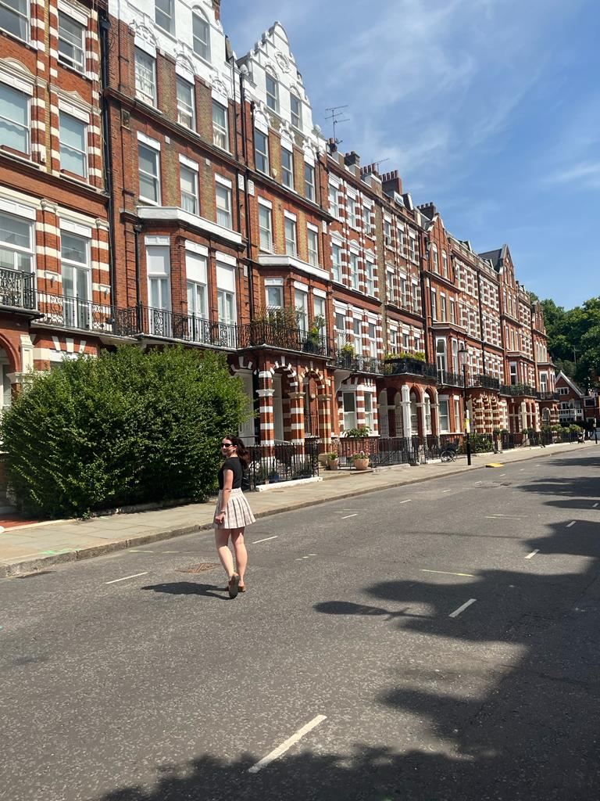
            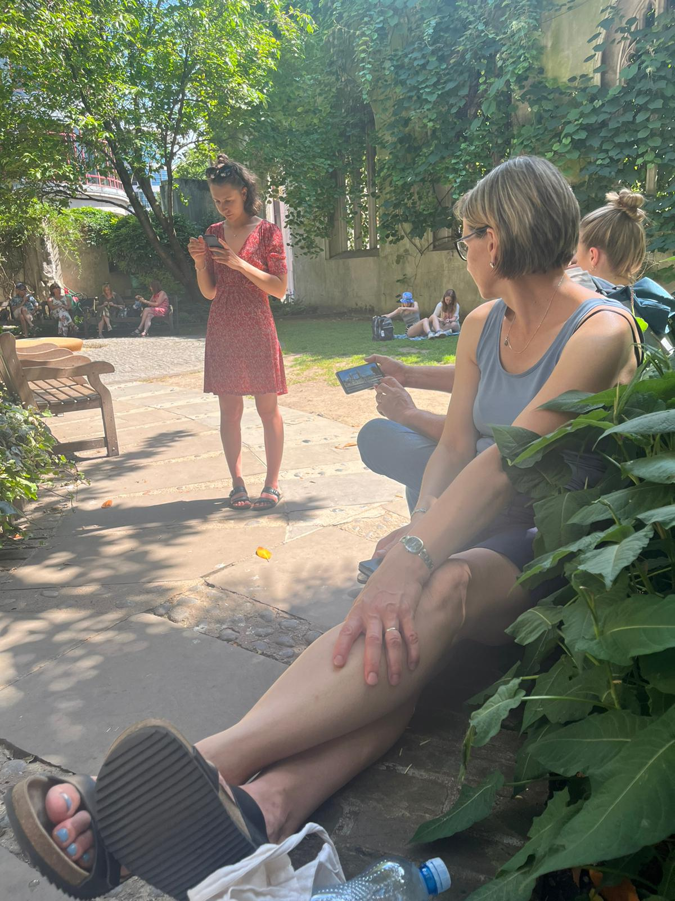
            
            
            
            
        </section>

<!-- sekce Portsmouth a ostrov Wight -->

<section class="portsmouth" id="portsmouth">

    <h3>Portsmouth</h3>

        <p>Z Londýna jsem se vlakem přesunuli do přístavního města Portsmouth, kde se konala moje promoce. Během našeho pobytu v Portsmouthu jsme se mimo jiné také vznášedlem podívali na nedaleký ostrov Wight. Na ostrově Wight jsme se podívali do Osbourne House, oblíbeného sídla královny Viktorie.</p>

</section>

    <section class="portsmouth-galerie_a">

            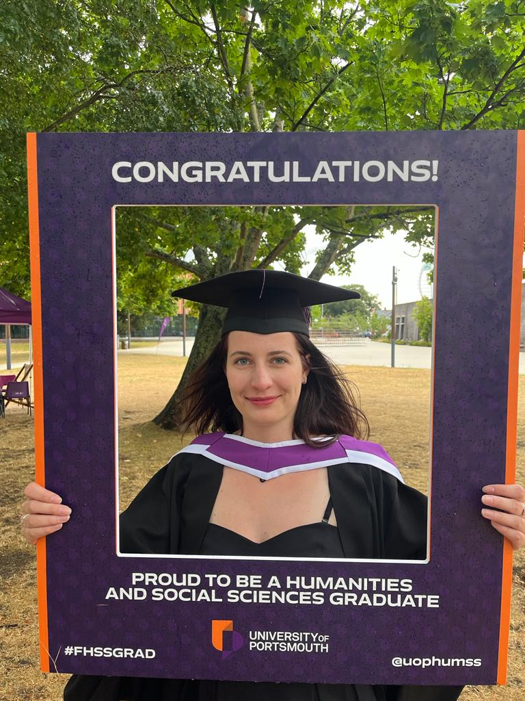
            
            
    </section>  
<section class="portsmouth-galerie_b">          
            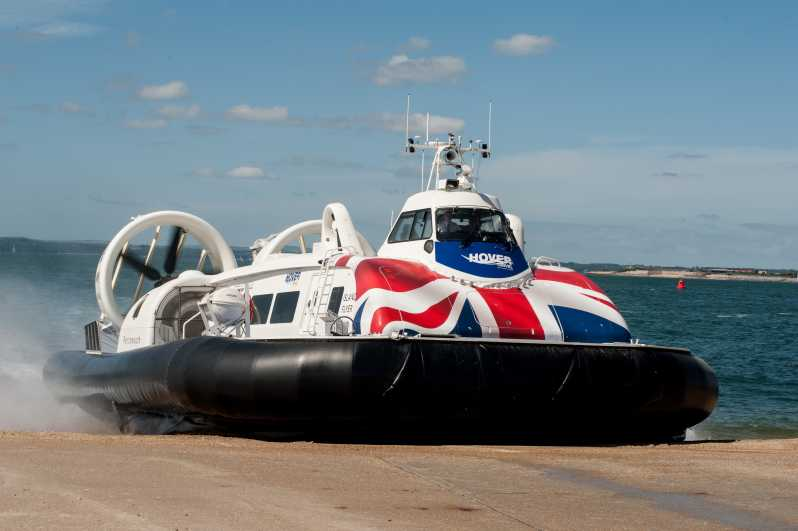
            
</section>

<!-- sekce Arundel a Brighton -->

<section class="arundel" id="arundel">

    <h3>Arundel a Brighton</h3>

        <p>Protože jsem nechtěli zůstavat jen v Portsmouth a víc prozkoumat jižní anglii tak jsme si pronajali na dva dny auto a vyrazili na hrad Arundel a do lázeňského města Brighton.</p>

        <p>Hrad Arundel stále ještě je hlavním sídlem vévodů z Norfolku a my měli štěstí a vévodskou rodinu jsme zde zahlédli. Naproti tomu Brightonu dominuje Royal Pavilon, který si nechal v 18. století postavit princ regent.</p>

<section class="arundel-galerie">
            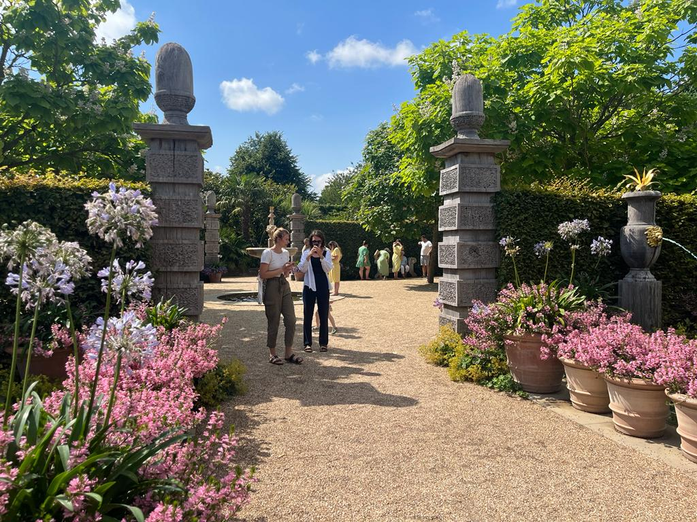
            
</section>
            
</section>

<!-- sekce Leeds a Harewood House -->

<section class="leeds" id="leeds">

    <h3>Leeds</h3>

        <p>Do Leedsu jsme se vypravily už jen já a moje dvě mladší sestry. V součastnosti je Leeds považován za nejrychleji se rozvíjející město ve Velké Britanii to ale neznamená, že by mu chybělo něco v archtektuře nebo kultuře za kterou jsme sem přijeli. Například kousek od města stojí velkolepé venkovské sídlo Harewood House.</p>

<section class="leeds-galerie">
        
        
        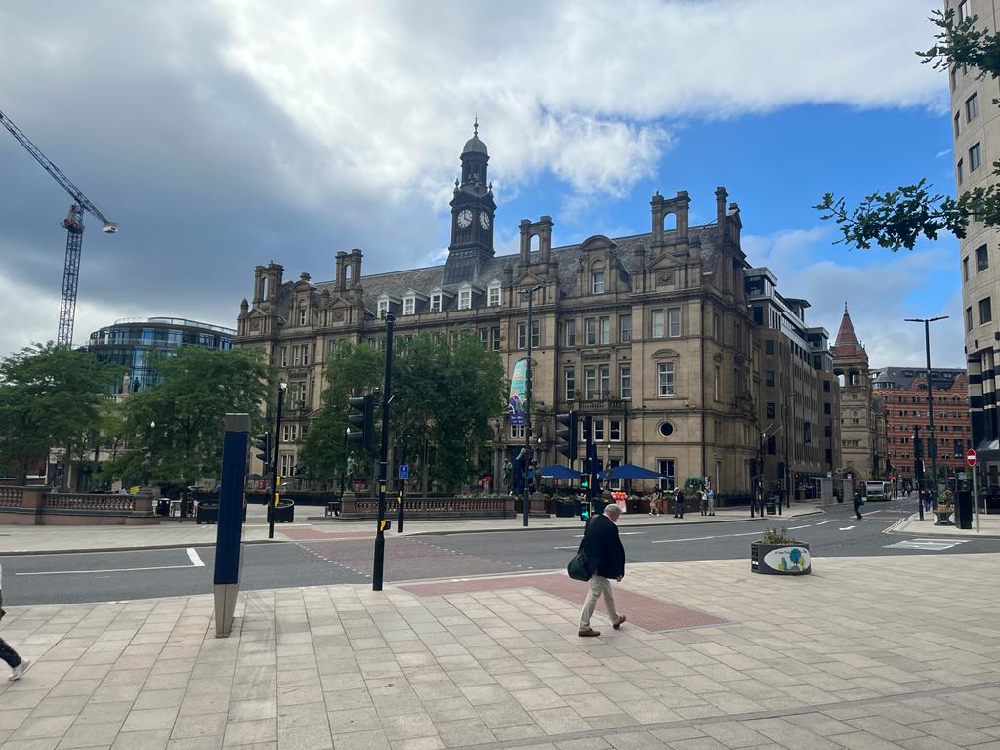
</section>

</section>        

<!-- sekce York -->

<section class="york" id="york">

    <h3>York</h3>

        <p>Musím přiznat, že York je asi moje nejoblíbenější anglické město. Plné křivolakých uliček a obchodů, které človka skoro vždycky dovedou k majestátní katedrále. Zároveň je York jednou z nejstaších vikingských osad v Anglii a mají zde tomuto tématu věnované celé museum.</p>

<section class="york-galerie">
            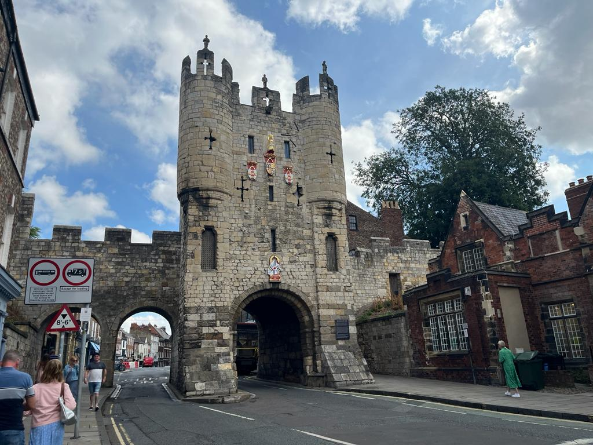
            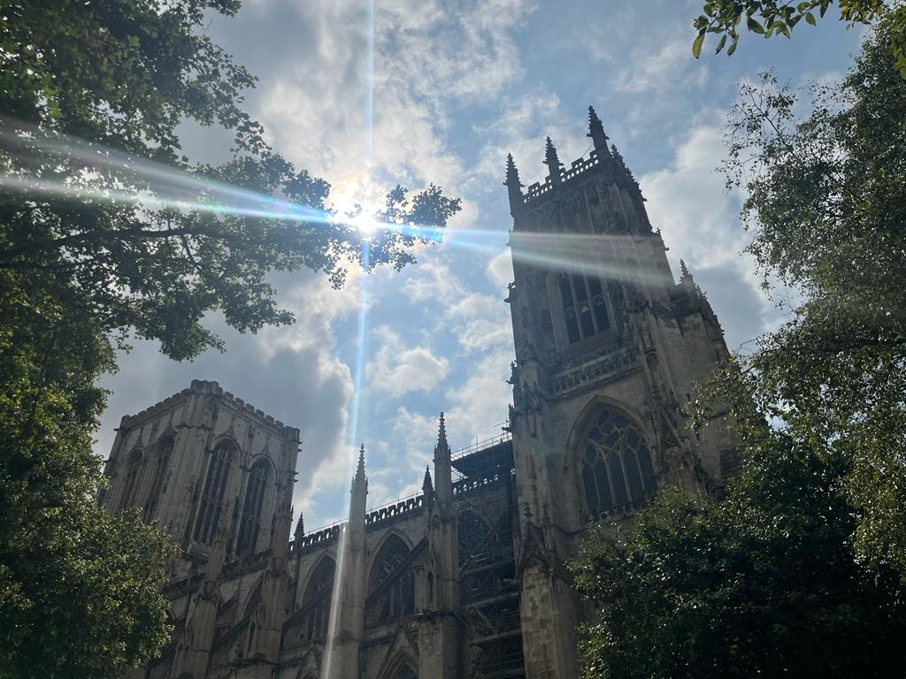         
</section>
<section class="york-galerie_b">
            
            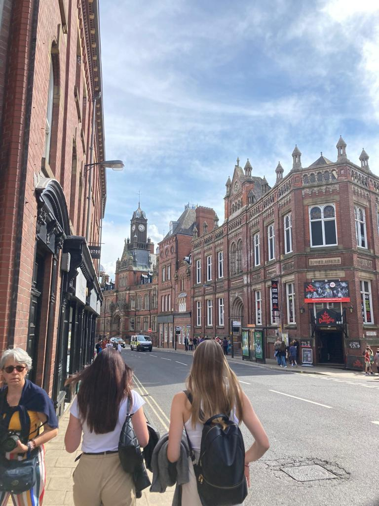
</section>

</section>
<!-- sekce Peak District a dům Bronteových-->

<section class="peak" id="district">

<h3>Peak District a dům sester Brontëových</h3>

    <p>Nakonec jsme vyrazili mimo velkoměsta, nejdříve do přírody a poté do malé vesnice Haworth. Musím se přiznat, že národní park Peak District jsme navštívily jlavně proto, že se tu natáčela ikonická scéna na útesu z Pýchy a Předsudku. Ve vesničce Haworth zase obklopený hřbitovy stojí dům sester Brontëových.</p>


 <section class="peak-galerie">   
        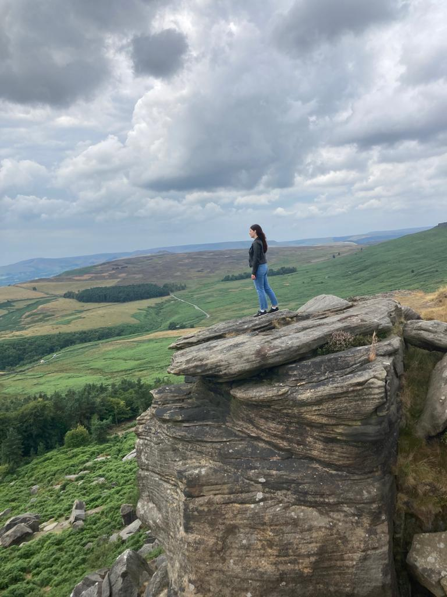
        
        
        
        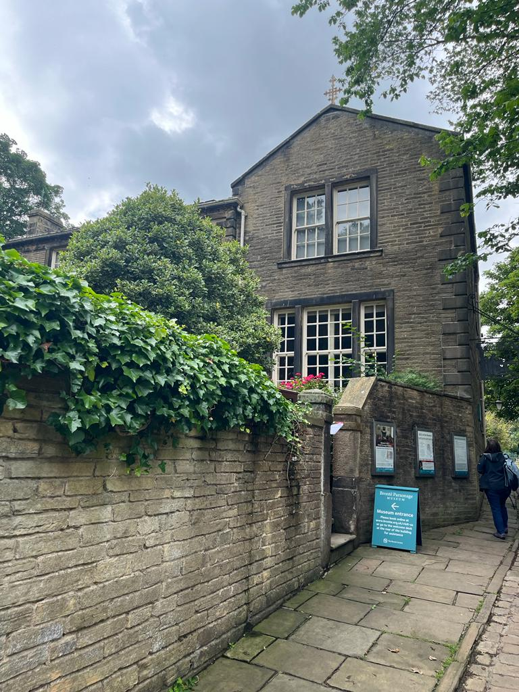

    </section>

</section>

<footer>
    <p>© 2022, Markéta Procházková</p>
</footer>


</body>
</html>